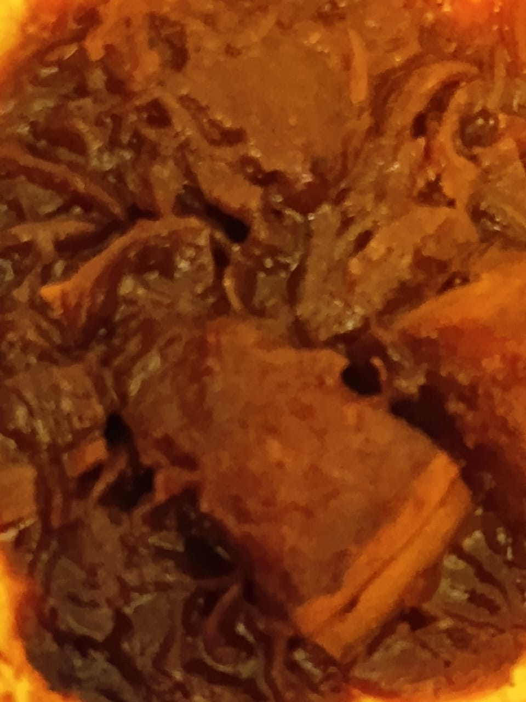

Pumpkin Chicken Curry

Description
An attempt to make a minimal curry with the ingredients at hand that would produce enough gravy to support 2-3 rice meals.
Ingredients
- Pumpkin ~ 300g
- Chicken ~ 150g
- Curry powder ~ 2 tsp
- Turmeric ~ 1/2 tsp
- Chilli powder ~ 1/2 tsp
- Coconut milk powder ~ 2.5 tsp
- Onion ~ 1
- Garlic cloves ~ 3
- Salt
- Dark soy sauce ~ 1 tsp
- Ketchup ~ 1 tsp
Steps
- Cut pumpkin into roughly 2-3 cm cubes.
- Then chop onion and garlic.
- Mix the coconut milk powder in about 100ml of warm water.
- Add 2 tsp of cooking oil to the pan and start frying onion till they
becomes soft in low heat, then add chopped garlic.
- Add the spices and mix well for about 30 seconds.
- Now add checken and cook them for 2-3 minutes in medium heat.
- After that, add pumpkin, 2.5 cups of water, soy sauce, ketchup and
liing it to a boil. Then simmer it for about 25 minutes.
- Finally, add coconut milk mixture and cook for another 2 minutes and add salt if necessary.
Menu